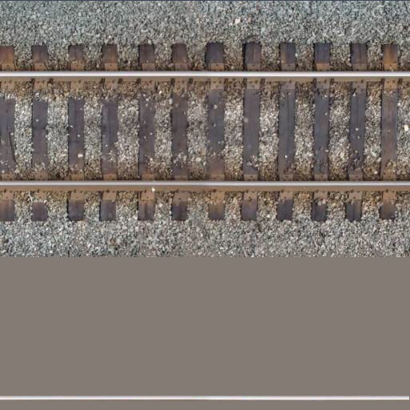

File Menu
Edit Menu
Map Menu

| Switch Type: | |||
| Model: | Vert. Offset: | ||
| Tile Image Size: | |||
| Patch Image Size: | |||
| Track Type: | |||
| Track Name: | |||
| Track Spacing: | |||
| Track Length: | |||
| Bridge Type: | |||
| Water Threshold: | |||
| Level Crossing Offset: | |||
| Wire Length (ft): | |||
| Wire Model: | |||
| Wire Pole Model: | |||
| Wire Pole Side: |